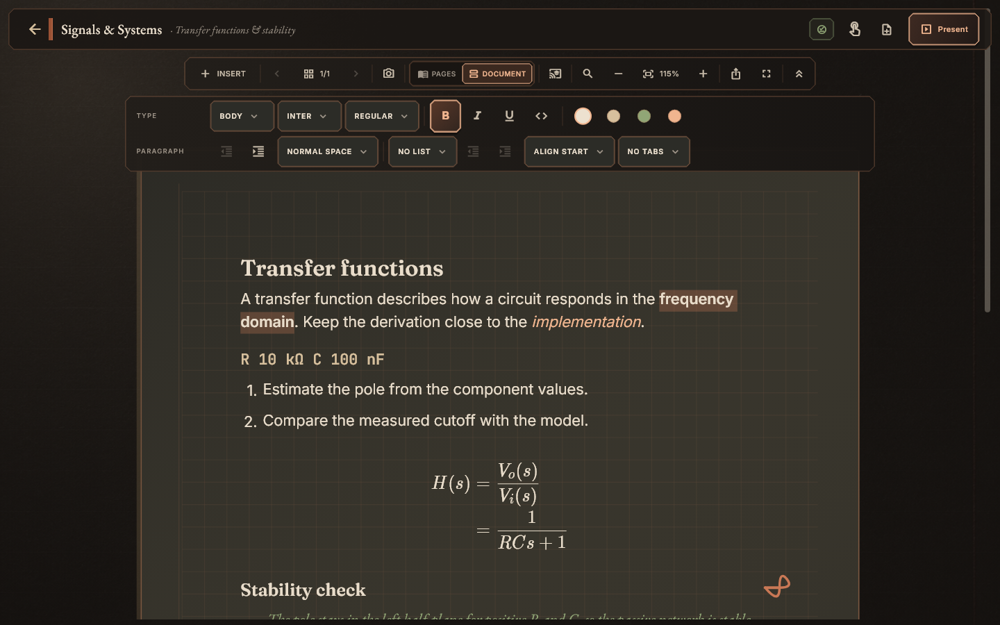
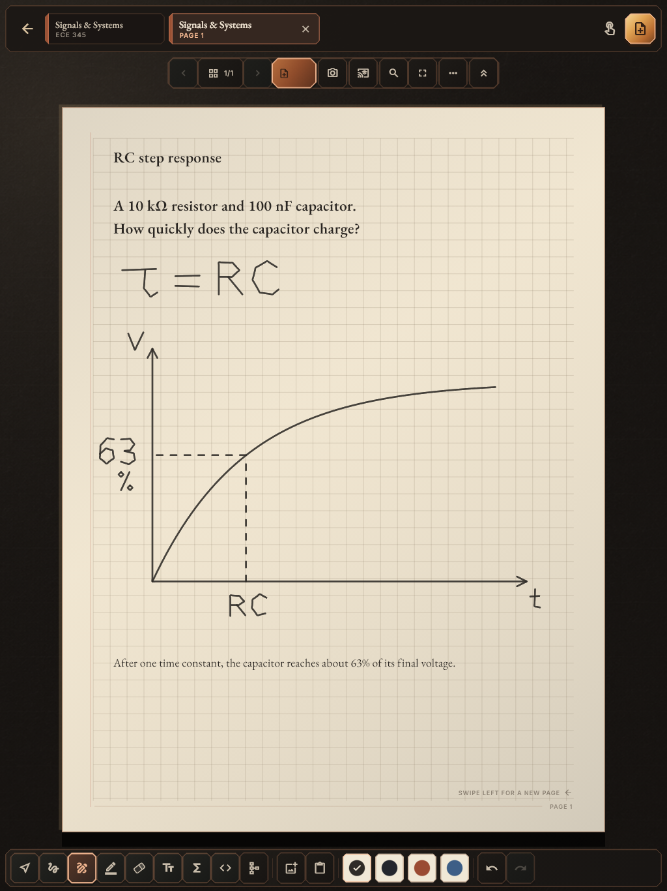
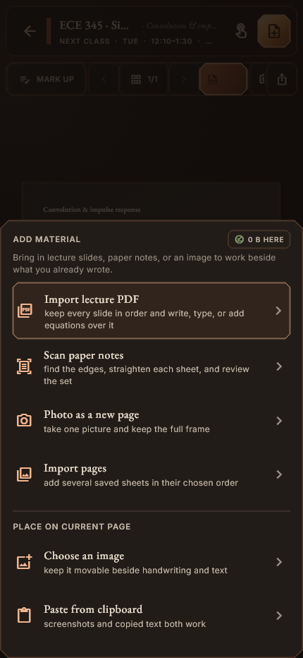
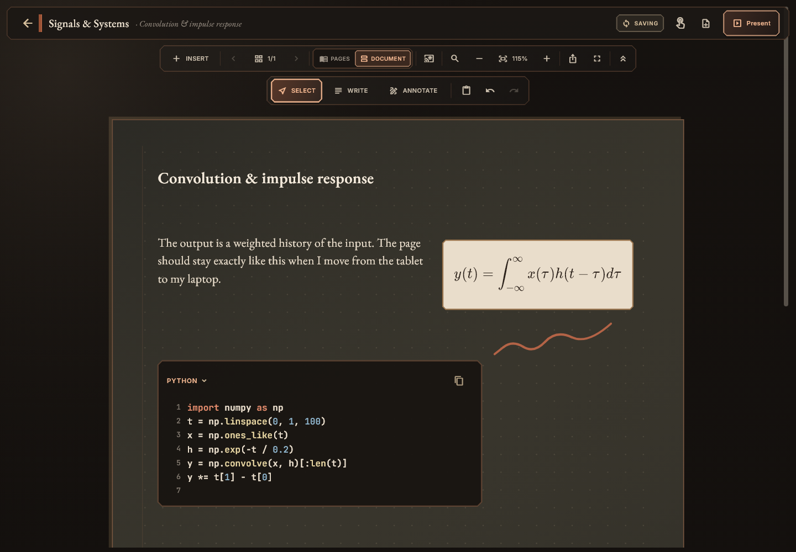
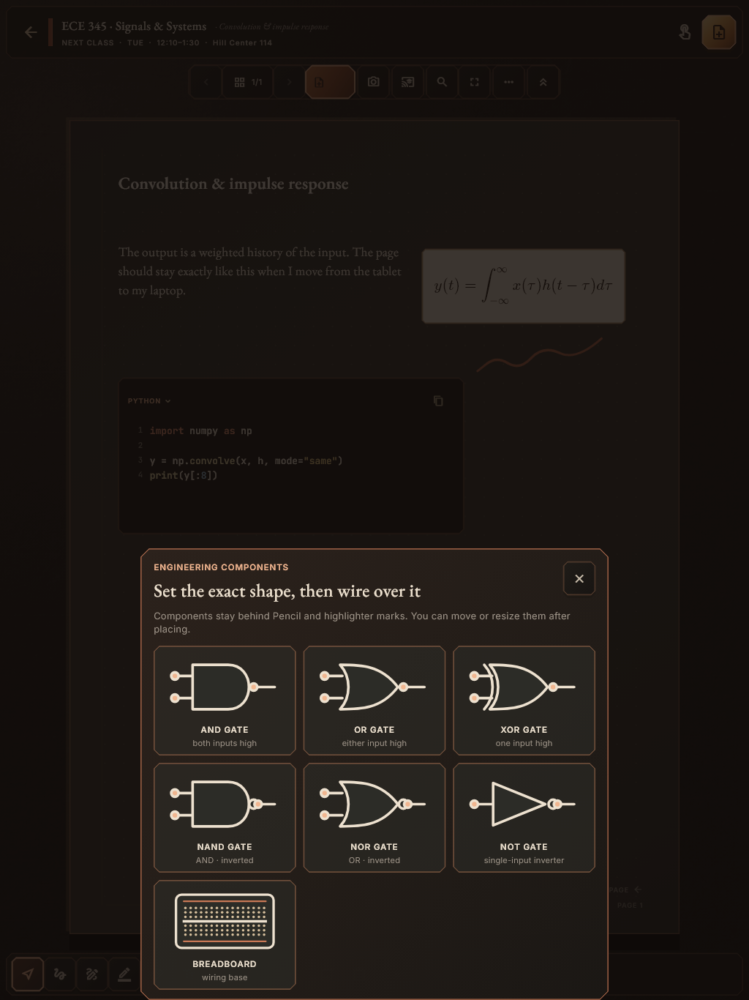

02 / Room Notes · cross-device notebook
Room Notes
I built a Flutter notebook for text, ink, equations, code and diagrams, with a shared document model and interfaces tailored to desktop, iPad and phone.


Fresh captures from the current app with sample coursework. Open any image for a closer look.
The notebook should follow you.
A student’s work rarely stays in one mode. A longer explanation, an equation, a diagram, and a quick review need different kinds of space and controls.
I built Room Notes around one document model with interfaces that can make room for those different tasks.
As the solo developer, I own the product direction, Flutter editor, device layouts, local database, synchronization, and the validation that connects them.
Try a page.
Use words and a sketch together. Edit the note, choose an ink color, and draw with a mouse, touch, or pen. You can undo a mark or reset the page.
Room Notes / interactive page
Put an idea on paper.
Type a note, then sketch below.
A small browser illustration of text and ink sharing a page. The app captures below show Room Notes itself.
Device layouts
The desktop puts text formatting around the document. The iPad puts pen tools within reach of the page. The phone makes room for bringing in PDFs, paper notes, photos, and clipboard content.
A fixed page gives each item a consistent position. The layouts change the tools around that page without reflowing its contents.




More than one kind of content.
A technical explanation can need prose, an equation, code, and a diagram together. Room Notes supports those blocks within the same notebook, with a component picker for engineering symbols.




Source-backed implementation
Document model, storage & sync
A notebook earns its place by keeping the work. I built the editing and synchronization around that responsibility, with local persistence, restart-safe pending work, and explicit handling for competing revisions.
Stable geometry
Authored pages use a fixed 900 × 1200 coordinate system. Each device scales and pans that page, so changing screens does not rearrange a diagram or detach an annotation from its subject.
Local work comes first
Drift/SQLite stores edits alongside queued synchronization work in one transaction. A slow connection does not need to interrupt writing, and a restart does not erase the queue.
Conflicts preserve work
Append-only cloud operations and alternate-copy preservation give competing revisions a recovery path. The design makes uncertainty visible instead of silently discarding a version.
Validation follows the risk
I check save-and-reopen behavior, interrupted synchronization, document geometry, and cloud access rules. Rendered interface review complements physical Pencil testing for latency, pressure, and palm behavior.
In development: shared lecture notes
One lecture. More than one way to understand it.
I’m extending Room Notes toward shared lecture pages: a way for classmates to contribute useful perspectives, compare explanations, and find what they missed.
The foundation stays personal. Sharing a page is an intentional action; joining a class should never publish someone’s notebook. This direction is in development, building on the document and sync architecture already in the app.
The larger ambition is a notebook that supports the whole learning process: capture an idea, work it through in the right medium, return to it anywhere, and eventually learn from the people studying alongside you.